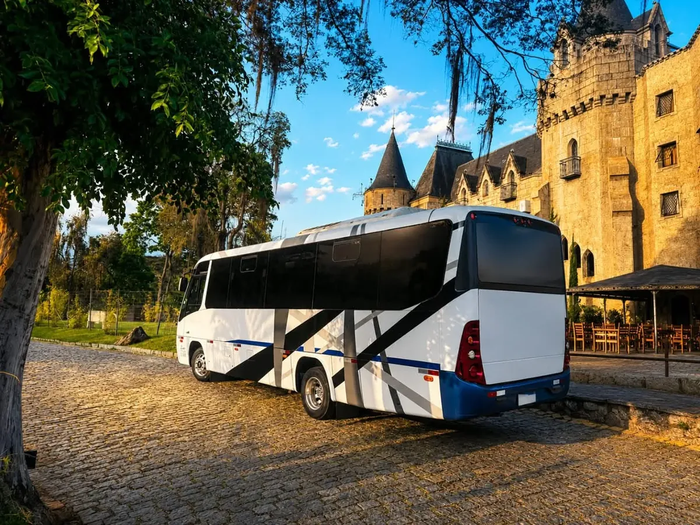
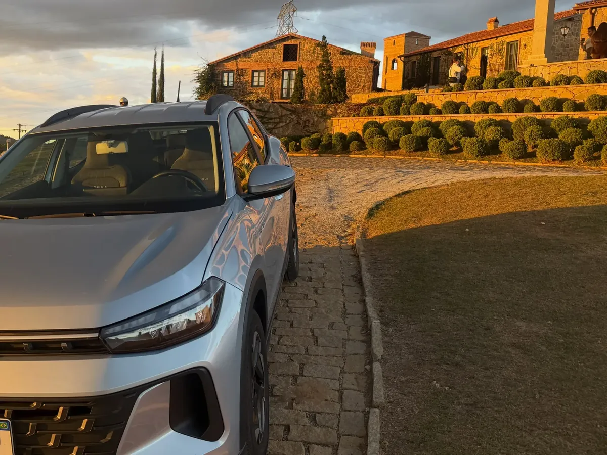
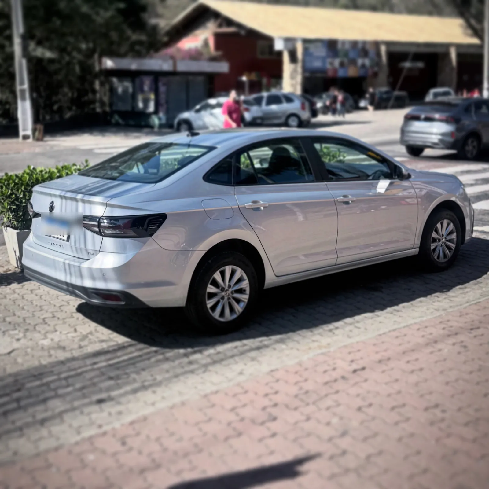
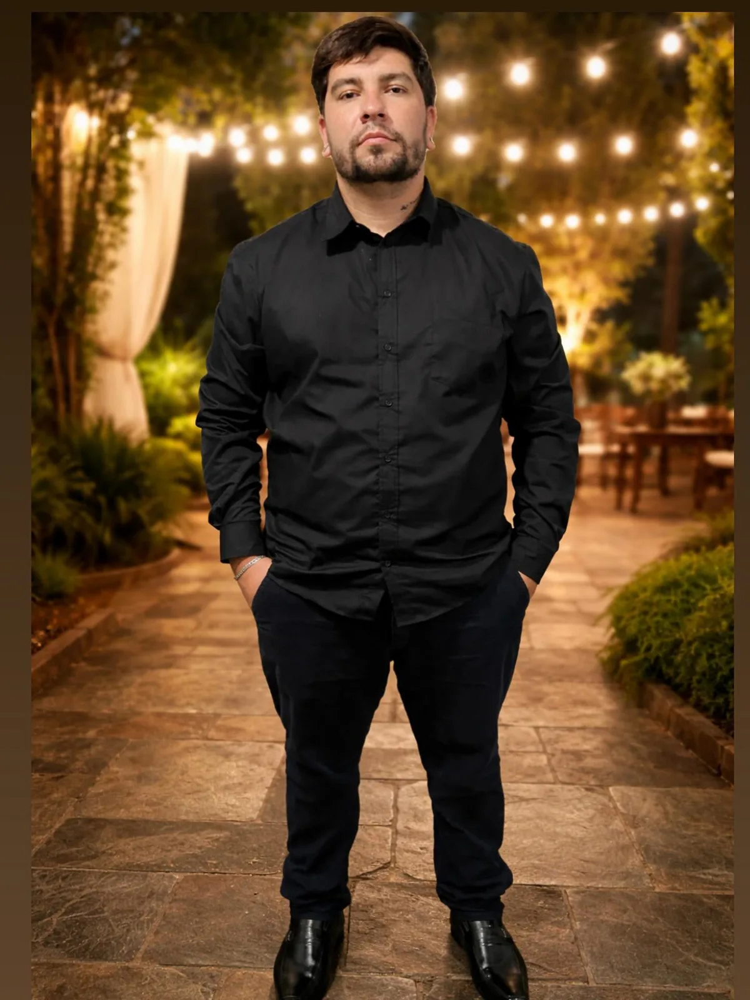

Transfer para aeroportos
Planeje sua ida ou chegada com antecedência e combine os detalhes diretamente pelo atendimento da empresa.
Consultar disponibilidadeTransfer executivo em Itaipava
Itaipava · Petrópolis · Rio de Janeiro
Transfer executivo com conforto, pontualidade e atendimento personalizado. Veículos selecionados de acordo com cada serviço, com os detalhes combinados pelo atendimento da empresa.
Atendimento 24 horas pelo WhatsApp
Transporte executivoAtendimento planejado sob agendamento
Base em ItaipavaAtendimento em Petrópolis e região
Atendimento 24 horasDisponibilidade informada pelo canal comercial
Conforto em cada atendimento
Transporte executivo · Sob agendamento
O veículo é escolhido de acordo com a necessidade de cada serviço e a disponibilidade da operação. As imagens mostram atendimentos reais e ajudam a apresentar o padrão de conforto buscado em cada viagem.
Serviços confirmados
Atendimento planejado para aeroportos, eventos, turismo, hotéis, pousadas e necessidades empresariais.
Planeje sua ida ou chegada com antecedência e combine os detalhes diretamente pelo atendimento da empresa.
Consultar disponibilidadeAtendimento personalizado para deslocamentos particulares entre Itaipava, Petrópolis, Rio de Janeiro e região.
Transporte organizado de acordo com o local, o horário e a dinâmica de cada compromisso ou evento.
Transporte de passageiros com veículo selecionado, atendimento profissional e planejamento do trajeto.
Transporte para aproveitar a experiência em vinícolas com conforto e tranquilidade do início ao fim do passeio.
Consultar o passeio
Um passeio para aproveitar cada momento sem se preocupar com o deslocamento.
Conheça a Cidade Imperial com deslocamento planejado entre pontos turísticos e históricos de Petrópolis.
Consultar City TourUma forma confortável de conhecer alguns dos cenários que fazem de Petrópolis a Cidade Imperial.
Atendimento para hotéis e pousadas, com suporte a traslados de hóspedes, aeroportos, eventos e outros deslocamentos sob agendamento.
Consultar atendimentoSoluções para entregas e demandas empresariais, incluindo serviço de motoboy para empresas conforme disponibilidade e necessidade.
Vans e ônibus confortáveis e regularizados, com motoristas profissionais, para empresas, eventos, excursões e turismo que precisam de estrutura própria.
Consultar disponibilidade
Terceirização de vans e ônibus com estrutura, motoristas e regularização por conta da empresa parceira.
Registros reais
Uma seleção de viagens, passeios e veículos utilizados em atendimentos da Transfer Executivo Itaipava.
Acompanhar no Instagram


As fotografias mostram veículos utilizados em atendimentos reais. O modelo é definido conforme a necessidade e a disponibilidade de cada serviço.
A experiência
Mais do que chegar ao destino, uma boa experiência de transfer começa na confiança de saber que tudo foi alinhado.
Veja como funcionaHorários e detalhes combinados para uma viagem mais tranquila.
Uma experiência pensada para tornar o deslocamento agradável.
Condução responsável e planejamento atento do trajeto.
Comunicação direta para entender cada necessidade da viagem.
Área de atendimento
Consulte a disponibilidade para sua origem, destino e horário. O atendimento público confirmado abrange Itaipava, Petrópolis, a região e viagens para o Rio de Janeiro.
Simples do início ao fim
Chame no WhatsApp e conte origem, destino e data.
Alinhe horários e os detalhes importantes do trajeto.
Receba a confirmação das informações combinadas.
Embarque com tudo organizado e siga com tranquilidade.

Responsável pela empresa
Saulo GarciaTransfer Executivo ItaipavaSobre a empresa
A Transfer Executivo Itaipava atua com transporte de passageiros, motorista executivo, aeroportos, eventos, passeios em vinícolas, City Tour e atendimento para hotéis e pousadas. A empresa também oferece soluções de logística para entregas e demandas empresariais.
Saulo Garcia é o responsável pela empresa e acompanha a operação dos atendimentos. O canal comercial informa disponibilidade 24 horas para combinar viagens, entregas e demandas empresariais.
Falar com a empresa5,0 · 105 avaliações
Confiança compartilhada por clientes
Conheça o perfil oficial da Transfer Executivo Itaipava e veja o que os clientes dizem. A reputação e os relatos atualizados ficam disponíveis diretamente no Google.
“Muito bom, atendimento excelente, pessoa do bem, cuidado pelo cliente sempre em primeiro lugar! Parabéns pelo trabalho.”
“Top de mais atendimento excelente 🤩”
“Excelente serviço! Saulo é sempre muito educado, pontual e gentil. O carro está sempre muito limpo e cheiroso.”
“Excelente profissional. Carro impecável, atendimento extraordinário. Indico sem dúvida alguma 👋”
“Gostei muito da corrida! O motorista é extremamente simpático e educado, o que tornou o caminho super agradável. Carro bem cuidado e condução exemplar. Cinco estrelas com certeza!”
“Excelente motorista! Muito educado, dirigiu com segurança e o carro estava impecável. Recomendo demais!”
“Excelente profissional! Pontual, educado e prestativo e sempre oferecendo o melhor conforto.”
“Motoristas muito competentes, educados e pontuais. Fiquei muito satisfeita com o serviço e, com certeza, contratarei mais vezes!”
“Atendimento nota 1.000. Motorista educado e muito prestativo. O veículo é bem cuidado também.”
“Excelente atendimento e serviço. Saulo foi muito gentil, pontual e prestativo. Recomendamos muito!!! 🌟🌟🌟🌟🌟”
“Excelente transporte executivo! Atendimento pontual, educado e muito profissional. Carro limpo, confortável e seguro. Sempre escolhe o melhor trajeto e oferece um serviço de qualidade. Recomendo para quem procura um carro de confiança…”
“Serviço excelente em todas as viagens! Motorista educado, pontual e muito profissional. O carro sempre limpo e confortável, trazendo segurança e tranquilidade durante todo o trajeto. Atendimento impecável do início ao fim. Recomendo muito o serviço.”
“Excelente profissional! Motorista extremamente educado, pontual e atencioso. O carro impecável, muito confortável e a viagem foi super tranquila e segura. Demonstrou muito respeito e cuidado durante todo o trajeto. Atendimento de altíssimo nível. Recomendo sem dúvidas!”
“Excelente atendimento! O motorista muito educado, pontual e dirige com bastante…”
“Ótimo serviço, motoristas extremamente educado e solicito. Não se importou em esperar o tempo que foi preciso e disposto a auxiliar em tudo que fosse preciso.”
Fale com a Transfer Executivo Itaipava
Informe a origem, o destino e o horário. A empresa retorna pelo WhatsApp para alinhar os detalhes e confirmar a disponibilidade.
Solicitar atendimento pelo WhatsApp